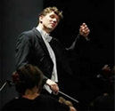

Krashna Musika
Het Delfts Studenten Muziek Gezelschap is opgericht in 1968 uit twee studentenkoren en één studentenorkest. Twee jaar later werd de Slavische naam Krashna Musika toegevoegd, wat 'mooie muziek' betekent. Er kan bij Krashna Musika gemusiceerd worden in een symfonieorkest, in een koor en als kamermuzieklid. Krashna Musika schrikt niet terug voor grote projecten. Zo zijn afgelopen jaren o.a. het War Requiem van Britten, het requiem van Brahms en de Johannes Passion uitgevoerd.
Het orkest wordt al meer dan 25 jaar geïnspireerd door Daan Admiraal. Hij studeerde hobo aan het Amsterdams Conservatorium, waar hij in 1973 het solo-examen aflegde wat werd bekroond met de Zilveren Vriendenkrans. In 1979 studeerde hij af op orkestdirectie bij Louis Stotijn, i.s.m. het Residentie Orkest. Sinds 1981 is Daan Admiraal als dirigent verbonden met Krashna Musika, waar hij tot 1993 ook het koor dirigeerde en nog steeds het orkest dirigeert. Momenteel is hij dirigent van het VU-orkest te Amsterdam, het toonkunst koor Den Haag, het 'Helikon' orkest en bij 'de Philharmonie'.
Op vrijdagavond staat het orkest onder leiding van Chris Pouw. Chris Pouw is de koordirigent van Krashna sinds 18 september 2008. Naast zijn opleiding Muziekwetenschappen aan de Universiteit van Utrecht, behaalde hij in 2000 zijn diploma koor/orkestdirectie aan het Conservatorium van Amsterdam bij Daniel Reuss. Hij volgde daarna nog lessen bij o.a. Jurjen Hempel en bij Roland Kieft en met het BBC Philharmonic Orchestra. Chris Pouw is verder vaste dirigent van het Arezzo Ensemble, het Arion Ensemble, het Haags Vocaal Ensemble, I Romantici, en kamerkoor Sjanton.